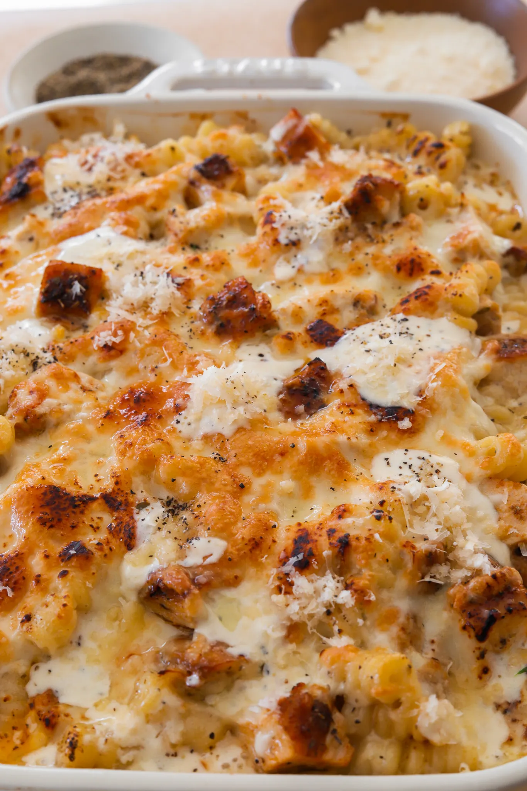
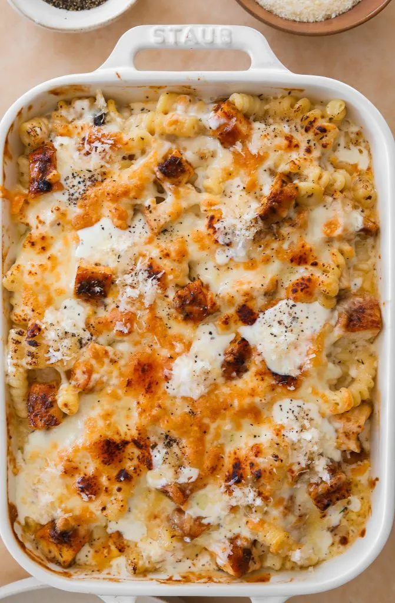

Dinner | Main Course
Chicken Alfredo Pasta Bake
Prep Time: 15 minutes
Cook Time: 45 minutes
Total Time: 1 hour
Yields: 5 to 7

This Chicken Alfredo Pasta Bake is the ultimate cozy, cheesy comfort
food that's perfect for any night of the week. Tender chicken and
pasta are smothered in a creamy homemade Alfredo sauce, topped with
melted mozzarella, and baked to perfection. It's that dish you’ll
want to dig into immediately—warm, satisfying, and incredibly
delicious!
Jump to Recipe
Dinner | Main Course
Chicken Alfredo Pasta Bake

This Chicken Alfredo Pasta Bake is the ultimate cozy, cheesy comfort
food that's perfect for any night of the week. Tender chicken and
pasta are smothered in a creamy homemade Alfredo sauce, topped with
melted mozzarella, and baked to perfection. It's that dish you’ll
want to dig into immediately—warm, satisfying, and incredibly
delicious!
Prep Time: 15 minutes
Cook Time: 45 minutes
Total Time: 1 hour
Yields: 5 to 7
Print Recipe
Pin Recipe
INGREDIENTS
Chicken
- 1 Pound chicken breast, about 2 large breasts
- 1 Tablespoon olive oil
- 2 Teaspoons Italian seasoning
- 1 Teaspoon lemon pepper
- 1 Teaspoon smoked paprika
- 1 Teaspoon garlic powder
- 1 Teaspoon salt
- 1/4 Teaspoon black pepper
Alfredo Sauce
- 3/4 Cup unsalted butter
- 1 1/2 Tablespoon fresh garlic, minced
- 3 Cups heavy cream
- 2 1/4 Teaspoons Italian seasoning
- 3/4 to 1 Teaspoon salt, more to taste
- 3/4 to 1 Teaspoon black pepper, to taste
- Dash of nutmeg
- 2 1/4 Cups parmesan, freshly grated
- 3 Tablespoons cream cheese
- 2 Tablespoons fresh parsley, finely chopped
Other
- 16 Ounces pasta of choice
- Salt, to boil pasta
- 2 Cups shredded mozzarella cheese
INSTRUCTIONS
Cook Chicken
-
In a small bowl, mix olive oil, Italian seasoning, lemon pepper,
smoked paprika, garlic powder, salt, and black pepper. Rub this
mixture all over the chicken breasts.
-
Heat a large pan over medium-high heat and cook the chicken for
about 5-7 minutes per side, until golden and fully cooked
through.
-
Remove the chicken from the pan, let it cool, then slice it into
bite-sized pieces.
Cook Pasta
-
Bring a large pot of salted water to a boil.
-
Cook your favorite pasta according to the package instructions
for al dente (usually around 8-10 minutes), then drain and set
aside.
Make Alfredo Sauce
-
In the same pan, melt butter over medium heat.
-
Add minced garlic and cook for about 1-2 minutes, until
fragrant.
-
Slowly pour in the heavy cream, then stir in Italian seasoning,
salt, pepper, and a dash of nutmeg.
-
Bring the sauce to a simmer and cook for about 3-5 minutes, then
whisk in parmesan cheese and cream cheese.
-
Continue cooking and stirring until thickened but smooth and
creamy.
-
Once the cheese is melted, fold in fresh parsley.
Assembly & Baking
-
Preheat your oven to 350°F (175°C).
-
In your baking dish, combine the cooked pasta, sliced chicken,
and Alfredo sauce until everything is evenly coated.
-
Top with shredded mozzarella cheese. Add a bit more chicken on
top if you want.
-
Bake for 10-15 minutes, until the cheese is melted and slightly
golden.
-
Switch the oven to broil and broil for 2-3 minutes until the top
is bubbly and golden brown.
-
Serve warm to enjoy!
Tips & Notes
Cut the recipe in half for a smaller portion.